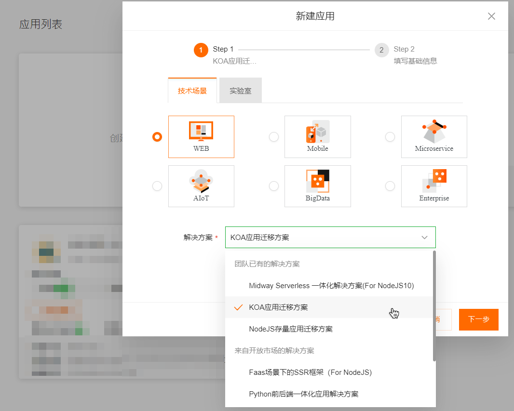
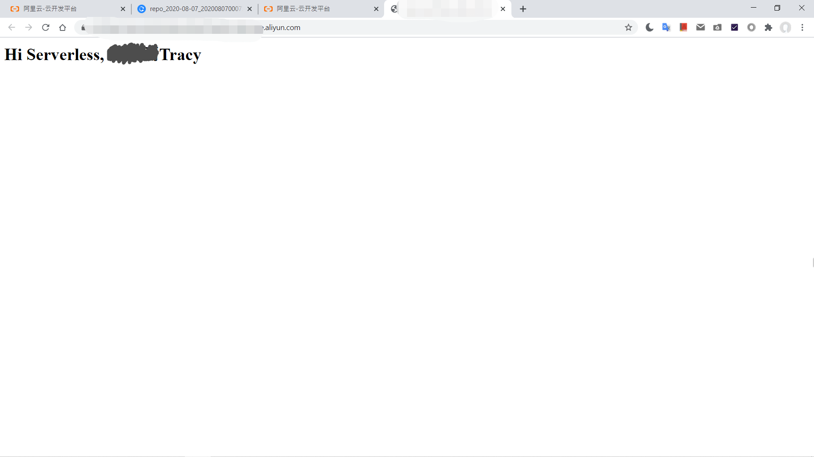
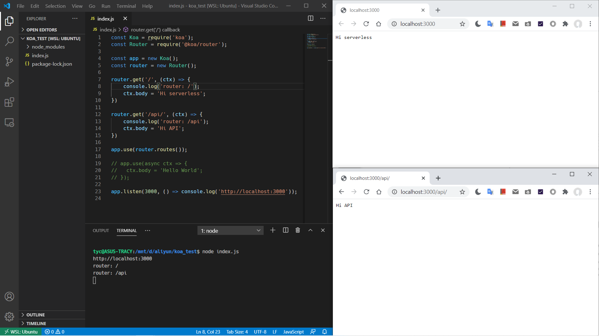

服务端渲染：koa与koa中间件
作业
新建一个KOA迁移应用方案Web应用
在云开发案例中，app.js作为主应用入口文件时，需要有这样一行代码，用于暴露入口模块
module.exports = app; |
修改router.get根目录的函数
router.get('/', (ctx, next) => { |
和本地一样，使用node app.js运行，按 预览 > 输入端口号 > 确定

就可以访问啦~

学习笔记
1. 什么是koa？
- 基于可扩展模型，HTTP协议的Web (Node.js)框架
- 基于经典的洋葱模型【“中间件”概念】
- 内核简单
2. 本地示例
新建项目后，安装koa依赖到本地
npm i koa |
测试经典hello world项目
const koa = require('koa'); |
koa Context用于封装node的request和response，使项目采用中间件(middleware)的开发方法，更加方便。每一个request将产生一个Context，以ctx标识（即中间件的接收方） >>更多
3. koa的基础使用
koa的中间件和依赖可以到GitHub上查看。
koa采用路由(router)请求同一个端口的不同路径，先安装router中间件
npm i @koa/router |
测试以下代码
const koa = require('koa'); |

两个路径都能正常request和response。
4. 中间件
概念：约定大于配置
app.use((ctx, next) => { |